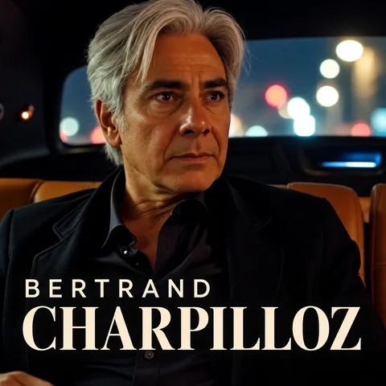

Bertrand CharpillozL’Altesse Ego
D’accords mineurs et d’aurores — Récital Piano & Voix
Avec Marie-Françoise Coelho au piano
Chanson française à texte, parlé-chanté au ras du micro et blues-cabaret nocturne : Bertrand Charpilloz chante ce qu'il a vécu, l'amour, le désir, la rupture et l'épreuve. 21 chansons originales, entre humour, sensualité et gravité, une voix de baryton grave et une philosophie forgée dans l'épreuve : on peut perdre le fil, et le renouer.
Sélection Direction Artistique
Pour les éditeurs, labels, superviseurs musicaux et programmateurs, chacun des 4 titres phares est présenté en deux maquettes : une maquette arrangée (single, radio, synchronisation) et une maquette piano-voix, proche du spectacle. Ces maquettes d'arrangement précèdent l'enregistrement studio du duo, prévu avant toute diffusion en streaming.
01. Sunset Boulevard
« J’aime le soleil qui brille, c’est mon étendard. »
Du parlé-chanté intimiste en Mi mineur vers un refrain majeur lumineux et fédérateur. Une philosophie de vie qui oppose le lâcher-prise, l'amour et la poésie à la force des éléments.
L'histoire et les paroles complètes →
📖 Lire un extrait du texte✕ Refermer l'extrait
Dans le fond de ma mémoire.
Le soleil qui brille
Dans le reflet de ton miroir.
J’aime le soleil qui brille,
C’est mon étendard. »
🎧 Maquette arrangée (Potentiel Single & Synchro)
🎹 Maquette piano-voix (Récital L'Altesse Ego)
02. Sur le creux de ma main
« Dis à la vigne, dis au vent, que j’ai essayé d’être vivant. »
Une méditation sereine sur la finitude : un homme de 60 ans regarde tomber les feuilles et fait la paix avec le temps qui reste. C'est de ce texte qu'est tirée la devise du spectacle : « J'ai vécu d'accords mineurs et d'aurores ».
L'histoire et les paroles complètes →
📖 Lire un extrait du texte✕ Refermer l'extrait
Comme on serre la mer entre ses doigts,
J’ai vécu d’accords mineurs et d’aurores,
Et de nuits où l’on ne s’appartient pas. »
🎧 Maquette orchestrale (Album & Cinéma)
🎹 Maquette piano-voix (Récital L'Altesse Ego)
03. Le Fil Rouge
« Mars deux mille vingt-quatre, une vie à me battre pour voir ma fille grandir. »
Colonne vertébrale émotionnelle du répertoire : du 18 mars 1997, jour de l'AVC hémorragique où la vie ne tient plus qu'à un fil, au réveil du coma le 1er avril, puis à la reconquête patiente de la marche, de la parole et du bonheur paternel.
L'histoire et les paroles complètes →
📖 Lire un extrait du texte✕ Refermer l'extrait
Prisonnier en exil,
Je perds la tête,
Je perds le fil.
[…]
Avril mille neuf cent quatre-vingt-dix-sept,
Ma vie n’tient plus qu’à un fil…
Le fil rouge où plus rien ne bouge. »
🎧 Maquette arrangée (Montée Cinématographique)
🎹 Maquette piano-voix (Confidence au ras du micro)
04. Mon Altesse Ego
« Toi, ma petite idée secrète, de t’avoir sous ma couette, un bout de vie… ce serait chouette. »
Chanson éponyme du récital écrite en hommage à la pianiste Marie-Françoise Coelho. Un inventaire poétique, espiègle et sensuel qui fait swinger la langue française avec un flegme pince-sans-rire.
L'histoire et les paroles complètes →
📖 Lire un extrait du texte✕ Refermer l'extrait
Aux allures de polichinelle,
Mon manège éternel,
Mon leurre sympathique,
Mon amour utopique,
Mon corps à corps,
Ma toison d’or. »
🎧 Maquette arrangée (Groove Chanson-Blues)
🎹 Maquette piano-voix (Duo Scénique 115 BPM)
Architecture du Répertoire — 21 Œuvres Originales
Paroles et musiques : Bertrand Charpilloz. Un catalogue structuré en quatre tableaux thématiques offrant aux Éditeurs, Directeurs Artistiques et Superviseurs Musicaux une dramaturgie complète (livret intégral des 21 textes et maquettes sur demande).
I. Figures Féminines, Prénoms & Muses
Portraits amoureux, espièglerie sensuelle, souvenirs d'adolescence et hommages complices.
- 04. Mon Altesse EgoSwing Cabaret · 115 BPM
- 06. NadinePortrait Féminin
- 07. Vanessa je vais je vaParlé-Chanté · Rimes
- 10. Oh ma jolie LisaBallade Tendre
- 11. SallyNocturne Blues
- 20. Mrs ParkerCabaret-Blues · Jeux de Sons
- 13. GoodbyeBelle Inconnue · d'après Baudelaire
II. Géographies Intimes & Escales
Carnets d'itinérance, d'est en ouest et du nord au sud, entre racines alsaciennes et terrasses solaires.
- 01. Sunset BoulevardSingle Solaire · 100 BPM
- 08. BruxellesEscale Belge · Chanson
- 12. Ma belle AlsaceRacines & Terroir Intime
- 16. Sur la terrasse du SénéquierChronique Méditerranéenne
III. Résilience, Temps & Finitude
La traversée de l'épreuve, l'adieu, la solitude urbaine, le temps qui passe et la gratitude d'être vivant.
- 02. Sur le creux de ma mainPoésie & Saisons · 76 BPM
- 03. Le Fil RougeRécit Résilience · 78 BPM
- 09. Comme si jamaisMélancolie & Temps
- 15. Last VegasAdieu & Lâcher-Prise
- 14. Personne dans ta vieNocturne Urbain · Duo
- 21. Repartir à zéroBlues & Renaissance
IV. Élégance du Verbe, Philosophie & Flegme
Jeux de langue, humanisme tempéré et fable piquante.
- 05. Le mal des motsJeux de Verbe & Poésie
- 17. L'éléganceHumanisme & Tempérance
- 18. ReviensAppel Intime
- 19. Les moustiquesFable Philosophique

Chanter ce que l'on a vécu
Né le 20 janvier 1966 à Saverne, d'un père suisse et d'une mère originaire de la Martinique, Bertrand Charpilloz grandit avec l'accordéon et un goût précoce pour la mélodie et le rythme. Il fait d'abord carrière comme ingénieur-conseil en organisation et gestion d'entreprise.
Deux épreuves vont tout déplacer. Le 20 janvier 1992, jour de ses 26 ans, sa sœur aînée Dominique disparaît dans le crash du mont Sainte-Odile. Le 18 mars 1997, un accident vasculaire cérébral hémorragique le plonge dans le coma. Il se réveille hémiplégique et aphasique, et met trois ans à réapprendre à marcher et à parler, notamment en chantant. Il raconte cette reconstruction dans « Mes liaisons cérébrales » (2013).
De ces années, il a tiré une philosophie simple : relativiser, lâcher prise, préférer l'amour au désespoir et la poésie au chaos. « Rien n'est jamais perdu », écrit-il en sous-titre de son livre. Ses 21 chansons sont d'abord des chansons d'amour : le désir, les ruptures, les portraits de femmes et les escales, avec l'humour des calembours et une sensualité pince-sans-rire, puis quelques méditations graves sur le temps qui reste. Une écriture dans la lignée de Serge Gainsbourg, Alain Bashung, Arno et Alain Souchon.
Il écrit des chansons depuis le début des années 1990 et se consacre à la musique depuis 2009. Avec la pianiste Marie-Françoise Coelho, il porte aujourd'hui ces chansons sur scène pour tous ceux qui cherchent des repères : on peut perdre le fil, et le renouer.
Au piano : Marie-Françoise Coelho
Pianiste et chanteuse de formation, Marie-Françoise Coelho entre au conservatoire à 6 ans et y obtient à 16 ans un premier prix de piano et de solfège. Elle se tourne ensuite vers le théâtre, au Théâtre Jeune Public de Strasbourg et dans les festivals de théâtre de rue.
À partir de 1999, elle se consacre au travail de la voix. Comédienne de doublage et voix off, elle prête sa voix à des documentaires et reportages, notamment pour Arte, à des habillages d'émissions et à des livres audio, dont « Le premier jour du reste de ma vie » de Virginie Grimaldi (Frémeaux & Associés) et l'album jeunesse « Garance et le maître des couleurs ».
Dans « L'Altesse Ego », elle ne se contente pas d'accompagner. Elle chante en duo certains passages du récital, à commencer par « Personne dans ta vie », écrite pour une voix d'homme et une voix de femme. Elle y tient aussi un rôle de conteuse, qui relie les tableaux du récital. « Mon Altesse Ego » lui est dédiée.
Espace Professionnels
Édition, enregistrement et scène : ce que le projet propose aux professionnels, en France, en Suisse, en Belgique et dans le réseau francophone.
1. Édition Musicale & Synchro
21 chansons originales déposées à la SUISA, en 4 tableaux thématiques. Paroles et musiques de Bertrand Charpilloz, qui en contrôle les droits. Catalogue complet et livret des textes sur demande.
2. Production Discographique
Maquettes d'arrangement disponibles. Prochaine étape : l'enregistrement studio du duo, voix et piano acoustique, avec Marie-Françoise Coelho.
3. Scène & Tournée (Plateau Léger)
Le récital « L'Altesse Ego » : un duo piano-voix pour théâtres, scènes conventionnées, festivals de chanson et centres culturels de 80 à 500 places. Cachet et disponibilités sur demande.
Presse & Médias
Télévision, presse écrite, conférence et référence bibliographique consacrées au parcours de Bertrand Charpilloz.
Un AVC à 30 ans
Émission présentée par Sophie Davant, diffusée le 18 décembre 2014 : Bertrand Charpilloz raconte son AVC et sa reconstruction.
Voir l'émission ↗ France 3 AlsaceTémoignage : Mes liaisons cérébrales
Reportage de France 3 Strasbourg (juin 2013) consacré à son récit de résilience, publié aux éditions 7 écrit.
Voir le reportage ↗ DNA · Édition de Saverne · 20 juin 2013Une vie à reconstruire après un AVC
Article des Dernières Nouvelles d'Alsace, édition de Saverne, sa ville natale.
Lire l'article ↗ L'Alsace · 5 janvier 2014Bertrand Charpilloz, à la reconquête de la vie
Portrait signé Corinne Frech (édition Alsace centrale, p. 17) : l'AVC, la reconstruction, la musique et la sortie de Mes liaisons cérébrales.
Lire l'article ↗Aux « accidentés de la vie » en général
Page « Santé » signée Eve Pousson (p. 3), avant sa conférence au palais ducal de Nevers le 15 novembre 2014.
Édition papier« Après avoir perdu ma sœur dans un crash, j'ai fait un AVC »
Témoignage de Bertrand Charpilloz dans le magazine Public.
Lire l'article ↗ TEDxAlsaceSalonA Strange Kind of Energy
Conférence TEDx (2015) sur l'amour, la confiance en soi et l'art de changer de regard sur sa vie.
Voir la conférence ↗ Bibliothèque nationale de FranceMes liaisons cérébrales
Récit autobiographique paru le 21 mai 2013 aux éditions 7 écrit, 155 pages. ISBN 978-2-36849-227-7.
Voir la notice BnF ↗Questions Fréquentes
L'essentiel sur Bertrand Charpilloz, son répertoire et le récital L'Altesse Ego.
Qui est Bertrand Charpilloz ?
Bertrand Charpilloz est un auteur-compositeur-interprète et parolier de chanson française, né le 20 janvier 1966 à Saverne, en Alsace. Il présente un répertoire de 21 chansons originales et le récital piano-voix « L'Altesse Ego » avec la pianiste Marie-Françoise Coelho.
Quel style de musique fait-il ?
De la chanson française à texte, entre parlé-chanté intimiste et blues-cabaret, portée par une voix de baryton grave. Il cite pour repères Serge Gainsbourg, Alain Bashung, Arno et Alain Souchon.
Quelle philosophie portent ses chansons ?
Une philosophie née de l'épreuve : relativiser, lâcher prise, préférer l'amour au désespoir et la poésie au chaos. Le sous-titre de son livre la résume : « Rien n'est jamais perdu. L'important est de ne jamais désespérer. »
Écrit-il ses propres chansons ?
Oui. Bertrand Charpilloz signe les paroles et les musiques des 21 titres de son catalogue.
Quelles chansons écouter en premier ?
« Sunset Boulevard », « Sur le creux de ma main », « Le Fil Rouge » et « Mon Altesse Ego », chacune en maquette arrangée et en maquette piano-voix sur cette page.
Quelle différence entre « L'Altesse Ego » et « Mon Altesse Ego » ?
« L'Altesse Ego » est le nom du récital piano-voix. « Mon Altesse Ego » est une chanson du répertoire, écrite en hommage à la pianiste Marie-Françoise Coelho.
Qui est Marie-Françoise Coelho ?
Marie-Françoise Coelho est la pianiste du récital « L'Altesse Ego », où elle chante aussi en duo certains passages et tient un rôle de conteuse. Pianiste et chanteuse de formation (premier prix de piano et de solfège à 16 ans), elle est aussi comédienne de doublage et voix off depuis 1999 : documentaires, notamment pour Arte, et livres audio, dont « Le premier jour du reste de ma vie » de Virginie Grimaldi.
Quel est le lien entre sa musique et son AVC ?
Victime d'un AVC hémorragique en 1997, il a raconté sa reconstruction dans le livre « Mes liaisons cérébrales » (2013) puis dans la chanson « Le Fil Rouge ».
Quelles sont les conditions d'accueil du récital ?
Un duo piano-voix de 1 h 15 à 1 h 30, ou un set de 35 minutes en première partie. Équipe de 2 à 3 personnes, fiche technique d'un piano et d'un micro chant, balances en 45 minutes, pour des salles de 80 à 500 places.
Comment programmer le récital ou recevoir les textes ?
Par la rubrique « Contact professionnel & booking » de cette page : le livret intégral des 21 textes (PDF) et les maquettes sont envoyés sur demande aux éditeurs, labels, superviseurs musicaux et programmateurs.